Pratica 1: Conhecendo os dados
Sara Mortara
3 de dezembro de 2018
O primeiro passo da modelagem estatística é conhecer bem seus dados
Vamos olhar para os parâmetros de média e desvio de diferentes conjuntos de dados e encontrar uma distribuição de probabilidade que melhor descreva os dados.
1. Média de idade do uso de fraldas
O crescimento do uso de fraldas despontou na América Latina nos últimos anos. Vamos olhar para a distribuição da idade da população que usa fraldas. Os dados são de uma amostra de 100 indivíduos.
Os dados estão no arquivo ‘idade_fraldas.csv’ no diretório ‘dados’. Primeiro, defina o diretório de trabalho e leia os dados no R.
# Lendo o arquivo de dados
fraldas <- read.csv("dados/idade_fraldas.csv")Vamos usar as funções summary e hist para inspecionar os gráficos.
# selecionando a coluna 'idade' do objeto fraldas
summary(fraldas$idade)## Min. 1st Qu. Median Mean 3rd Qu. Max.
## 0.00 0.00 1.00 16.83 3.00 99.00# qual a variancia?
var(fraldas$idade)## [1] 1046.446Qual idade média da população amostrada que usa fraldas? Este valor é representativo da distribuição dos dados observados?
# grafico de boxplot da idade de pessoas que usam fraldas
hist(fraldas$idade, main="média=16", xlab="Idade (anos)", ylab="Frequência")
# linha vermelha com o valor médio
abline(v=mean(fraldas$idade), col="red", lwd=2)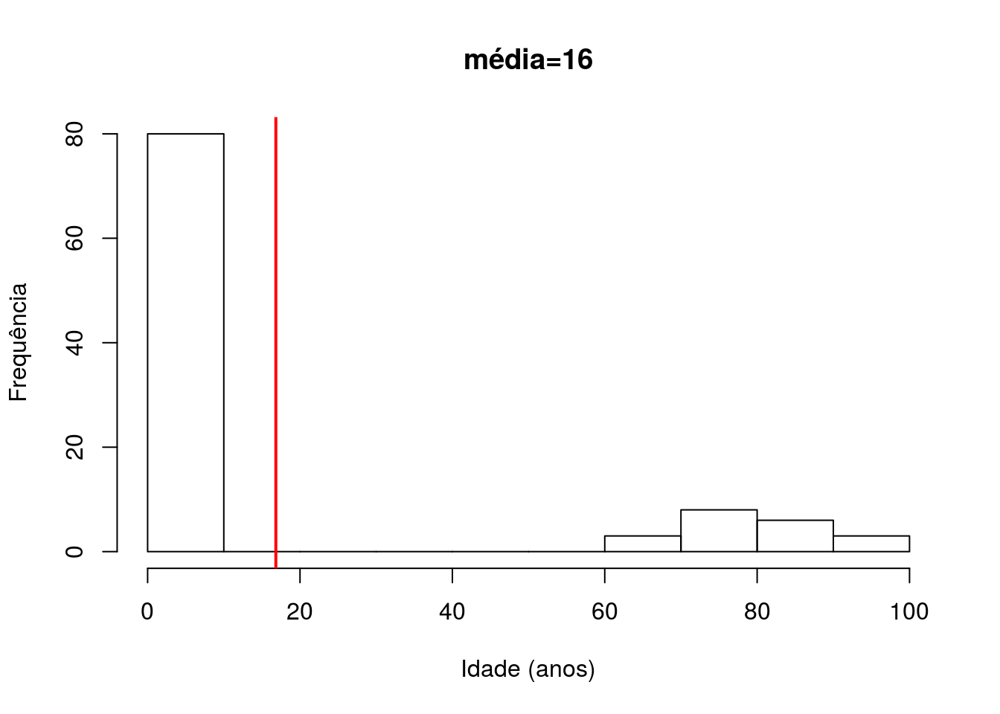
Este é um caso específico de uma distribuição bimodal, isto é, uma distribuição com dois picos distintos. Vamos separar em dois grupos, um com os 80 primeiros indivíduos e outro com os 20 demais.
# selecionando os 80 primeiros valores
bb <- fraldas$idade[1:80]
# selecionando os 20 últimos valores
vv <- fraldas$idade[81:100]Vamos visualizar em um histograma a distribuição dos dois conjuntos de dados e suas respectivas médias (linha vermelha).
# define duas janelas gráficas, com 1 linha e 2 colunas
par(mfrow=c(1,2))
# histograma dos 80 individuos crianças
hist(bb, main="média=0.8", xlab="Crianças", ylab="Frequência")
abline(v=mean(bb), col="red")
#histograma dos 20 individuos idosos
hist(vv, main="média=80", xlab="Idosos", ylab="Frequência")
abline(v=mean(vv), col="red")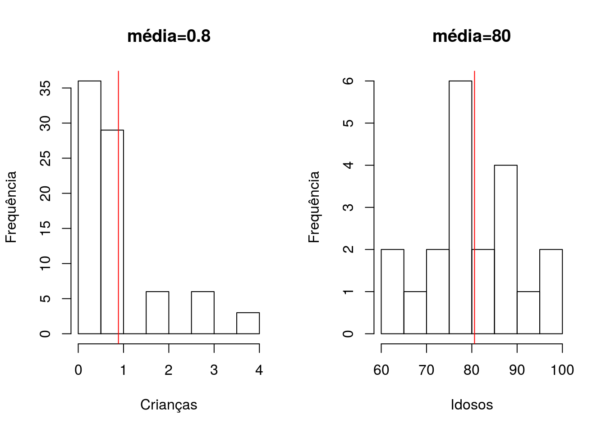
# volta à configuração original de 1 linha e 1 coluna
par(mfrow=c(1,1))Nestes casos, a média parece um indicador melhor da distribuição dos dados dentro de cada conjunto.
Vamos agora conhecer distribuições mais comuns de dados que iremos usar ao longo da semana e entender quais os parâmetros que as descrevem.
2. Distribuições de dados
2.1. Distribuição normal
A distribuição normal, ou gaussiana é bastante comum, mas lembre-se de que nem tudo na natureza é normal. A distribuição normal é uma distribuição contínua. Uma variável \({X}\) descrita pela distribuição normal é definida como:onde \(\mu\) é a média da distribuição e \(\sigma\) é o desvio padrão. A variância da distribuição normal é \(\sigma^2\).
Vamos gerar valores aleatórios extraídos de uma distribuição normal com parâmetros \(\mu\) e \(\sigma\) conhecidos. Para gerar distribuições aleatórias a partir de uma normal, vamos usar a função rnorm.
Primeiro, o vamos criar o que chamamos de distribuição normal padrão: \(\mu=0\) e \(\sigma=1\).
# como estamos gerando distribuições aleatórias, para que todos os computadores gerem os mesmos valores, usamos a função 'set.seed' com o mesmo valor
set.seed(42)
# usamos a funcao rnorm que recebe: n de observações, a média e o desvio
norm1 <- rnorm(n=100, mean=0, sd=1)
hist(norm1, main=expression(paste(lambda,"=0", ", ", sigma, "=1", sep="")), probability=TRUE)
abline(v=mean(norm1), col="red")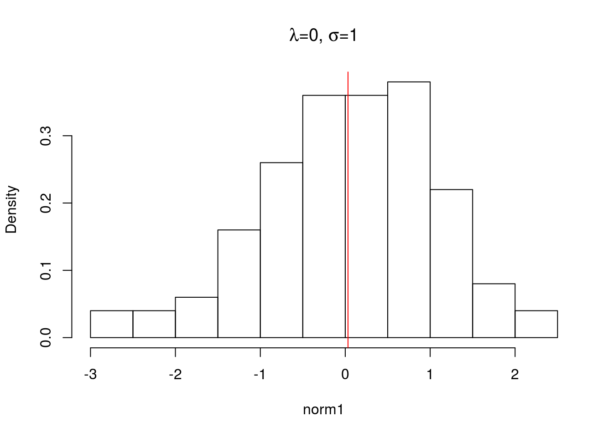
Note que mesmo um conjunto de valores extraídos de uma distribição normal, simplesmente devido ao processo de amostragem podem não seguir uma distribuição normal perfeita.
Vamos ver o que acontece quando aumentamos o tamanho da amostra.
# usamos a funcao rnorm que recebe: n de observações, a média e o desvio
norm2 <- rnorm(n=10000, mean=0, sd=1)
hist(norm2, main=expression(paste(lambda,"=0", ", ", sigma, "=1", sep="")), probability=TRUE)
abline(v=mean(norm2), col="red")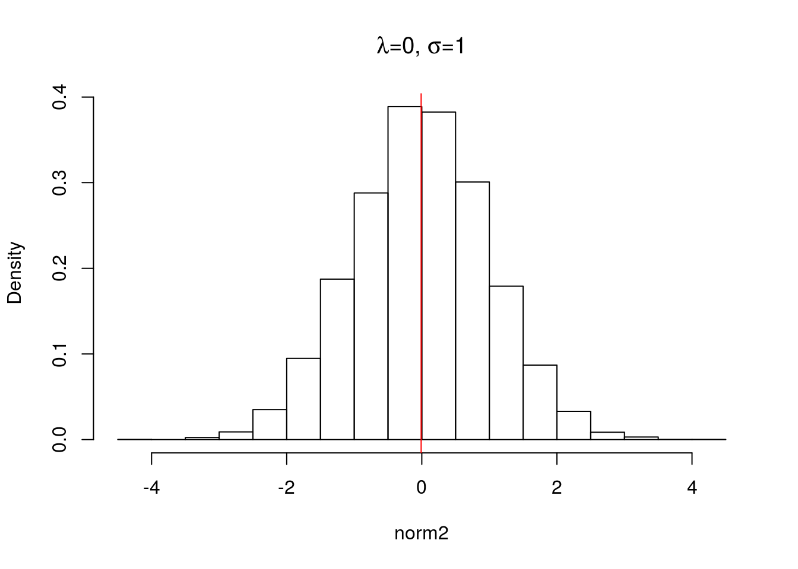
Com o aumento da amostra, podemos ver que a média \(\mu\) se aproxima de 0 e a distribuição fica mais simétrica. Use os comandos mean e sd para comparar os valores da média e desvio padrão dos dois objetos gerados ( norm1 e norm2 ).
Vamos explorar um pouco mais os parâmetros da distribuição normal. Vamos criar dois conjuntos de dados com a mesma média \(\mu\) e desvio padrão \(\sigma\) diferentes.
# criando um vetor com uma variável normal de média 0 e desvio 2
norm3 <- rnorm(100, mean=0, sd=2)
# criando um vetor com uma variável normal de média 0 e desvio 8
norm4 <- rnorm(100, mean=0, sd=8) Agora vamos visualizar os dados em um histograma de densidade.
par(mfrow=c(1,2))
hist(norm3, main=expression(paste(lambda,"=0", ", ", sigma, "=2", sep="")),
probability = TRUE, xlim=c(-22,22 ))
abline(v=mean(norm3), col="red")
hist(norm4, main=expression(paste(lambda,"=0", ", ", sigma, "=8", sep="")),
probability = TRUE, xlim=c(-22,22))
abline(v=mean(norm4), col="red")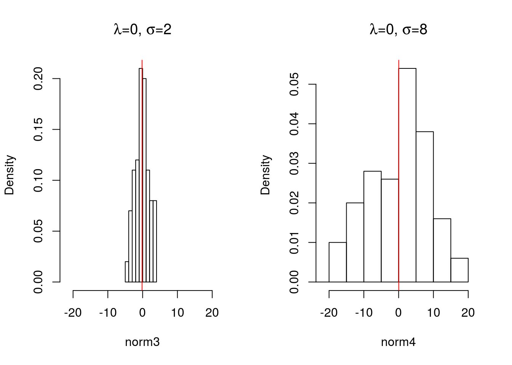
Note que, apesar dos dois conjuntos de dados virem de uma distribuição normal com a mesma média, como o desvio padrão é diferente, as distribuições de cada conjunto de dados tem formas bastante distintas.
2.1.1 Distribuição normal na natureza
A distribuição normal é utilizada para descrever dados contínuos que possuem distribuição simétrica em torno da média, como por exemplo peso de algum organismo, comprimento de ossos, comprimento de flores, etc.
Vamos olhar para a distribuição de comprimento de pétalas e sépalas de espécies do gênero Iris setosa (Iridaceae) da península de Gaspé (Canadá). Os dados ficaram famosos porque o estatístico Ronald Fisher usou esse conjunto para desenvolver a teoria da análise de discriminantes, mas não foi Fisher quem coletou os dados. Os dados foram coletados por Edgar Anderson em áreas de pastagem na península de Gaspé. Edgar mediu todas as 50 pétalas e sépalas imediatamente após a coleta utilizando o mesmo equipamento. Esse conjunto de dados já existe dentro do R. Para carregar os dados é preciso usar a função data. Uma vez carregados os dados, um objeto chamado iris é criado em sua área de trabalho.

# carregar os dados das galinhas
data("iris")
# use o comando ?iris para acessar a página de ajuda do objeto e entender mais sobre os dadosUse o comando summary para entender mais sobre a distribuição das variáveis dentro do objeto iris
summary(iris)## Sepal.Length Sepal.Width Petal.Length Petal.Width
## Min. :4.300 Min. :2.000 Min. :1.000 Min. :0.100
## 1st Qu.:5.100 1st Qu.:2.800 1st Qu.:1.600 1st Qu.:0.300
## Median :5.800 Median :3.000 Median :4.350 Median :1.300
## Mean :5.843 Mean :3.057 Mean :3.758 Mean :1.199
## 3rd Qu.:6.400 3rd Qu.:3.300 3rd Qu.:5.100 3rd Qu.:1.800
## Max. :7.900 Max. :4.400 Max. :6.900 Max. :2.500
## Species
## setosa :50
## versicolor:50
## virginica :50
##
##
## Vamos selecionar apenas os dados da espécie I. setosa e olhar a distribuição.
# primeiro criamos um objeto apenas com as observações da espécie I. setosa
setosa <- iris[iris$Species=="setosa",]Vamos criar um gráfico para criar um histograma de densidade probabilística do comprimento das sépalas e pétalas de I. setosa.
par(mfrow=c(1,2))
hist(setosa$Sepal.Length, probability=TRUE, main="Comprimento da sépala")
hist(setosa$Petal.Length, probability=TRUE, main="Comprimento da pétala")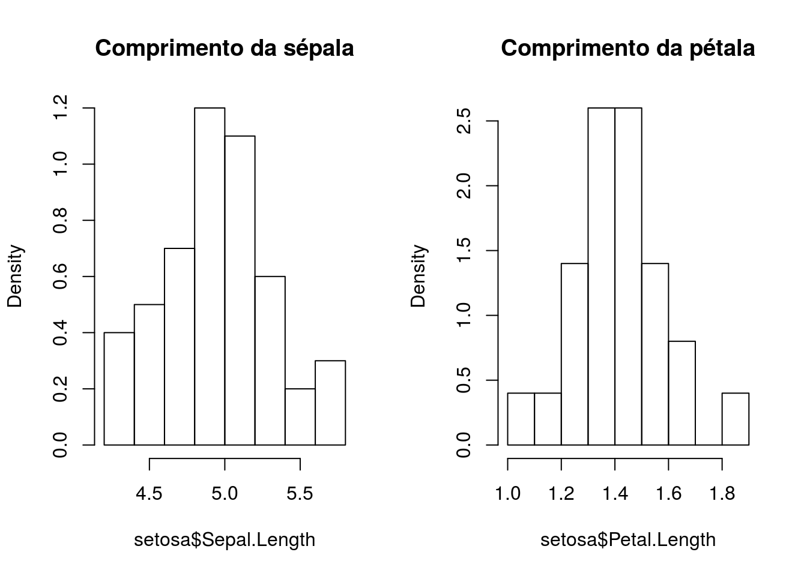
par(mfrow=c(1,1))Vamos checar o ajuste dos dados à distribuição normal. Antes, vamos calcular a média e desvio padrão dos dados de comprimento de sépala e pétala da I. setosa.
# primeiro vamos calcular a média e o desvio dos comprimentos da sépala e pétala
med.sepala <- mean(setosa$Sepal.Length)
desv.sepala <- sd(setosa$Sepal.Length)
med.petala <- mean(setosa$Petal.Length)
desv.petala <- sd(setosa$Petal.Length)Agora vamos fazer uma comparação visual do histograma de densidade dos dados com a curva de densidade probabilística estimada a partir de uma distribuição normal com média e desvio iguais aos dados. Ou seja, a curva que irá aparecer no gráfico tem \(\mu\) e \(\sigma\) iguais aos dados da I. setosa.
par(mfrow=c(1,2))
# comparando o histograma dos dados com uma curva de uma distribuição normal
## para sepala
hist(setosa$Sepal.Length, probability = TRUE)
# a curva normal é gerada com parâmetros de média e desvio igual aos dados de sépala
curve(dnorm(x, mean=med.sepala, sd=desv.sepala), add=TRUE, col="blue")
## para pétala
hist(setosa$Petal.Length, probability = TRUE)
# a curva normal é gerada com parâmetros de média e desvio igual aos dados de pétala
curve(dnorm(x, mean=med.petala, sd=desv.petala), add=TRUE, col="blue")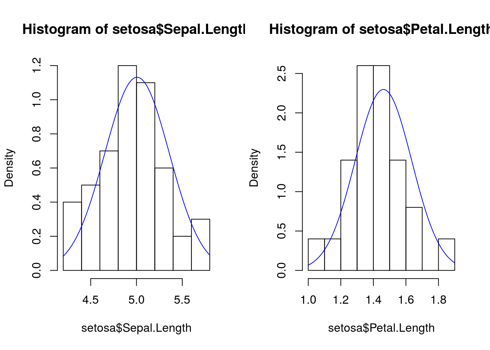
par(mfrow=c(1,1))2.2. Distribuição binomial
A distribuição binomial é uma distribuição de probabilidade discreta do número de sucessos em \(n\) tentativas independentes. Cada tentativa tem duas possibilidades: sucesso ou fracasso. Uma variável binomial \(X\) é definida pelo número de resultados bem sucedidos:
onde \(n\) é o número de tentativas independentes e a probabilidade de um evento de sucesso é \(p\).
A média de uma distribuição binomial é definida por \(np\) e a variância é definida por \(np(1-p)\). Vamos conhecer melhor a distribuição de probabilidade binomial e seus parâmetros.
Um exemplo clássico da distribuição binomial é o jogo de moedas. Em uma moeda não viciada, a probabilidade de tirar cara é 0,5. A probabilidade de 0,5 é justamente o parâmetro \(p\) da binomial negativa. Em média, se você jogar uma moeda 25 vezes, a probabilidade de tirar cara seria 12,5. O valor de 12,5 é justamente a média de distribuição binomial de probabilidade \(p=0,5\) e \(n=25\) , definida por \(np\).
Vamos entender melhor a distribuição binomial simulando valores no R. Primeiro, vamos criar um vetor contendo 1000 valores aleatórios vindos de uma distribuição binomial. O número de tentativas \(n\) é igual a 25 e a probabilidade de sucesso de cada tentativa \(p\) é 0,5. Em outras palavras, o que estamos tentando encontrar é a probabilidade de 1000 pessoas tirarem caras em uma moeda em 25 tentativas.
# Criando 1000 valores de uma amostra de 25 com probabilidade 0,5
bin1 <- rbinom(n=1000, size=25, prob=0.5)Vamos olhar a distribuição de probabilidades do vetor bin1.
par(mfrow=c(1,2))
hist(bin1, probability=TRUE, main="n=25, p=0.5")
abline(v=mean(bin1), col="red")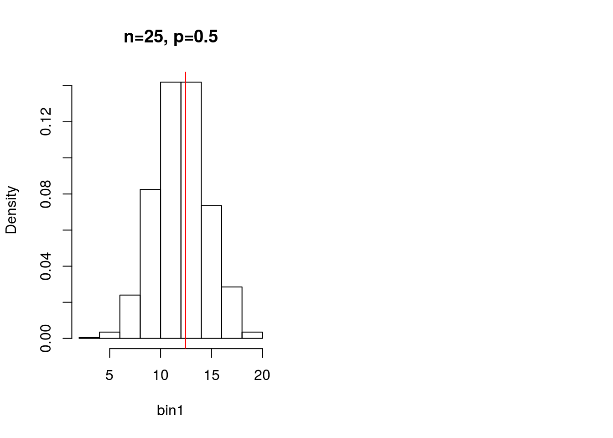
Agora imagine uma moeda viciada, em que a probabilidade de se tirar cara é 0,8. Qual a distribuição de probabilidade de sucesso em 25 tentativas? Vamos criar um vetor com valores aleatórios de uma binomial com \(n=25\) e \(p=0,8\).
# Criando 1000 valores de uma amostra de 25 com probabilidade 0,8
bin2 <- rbinom(n=1000, size=25, prob=0.8)E vamos olhar o histograma de densidade probabilística.
hist(bin2, probability=TRUE, main="n=25, p=0.8")
abline(v=mean(bin2), col="red")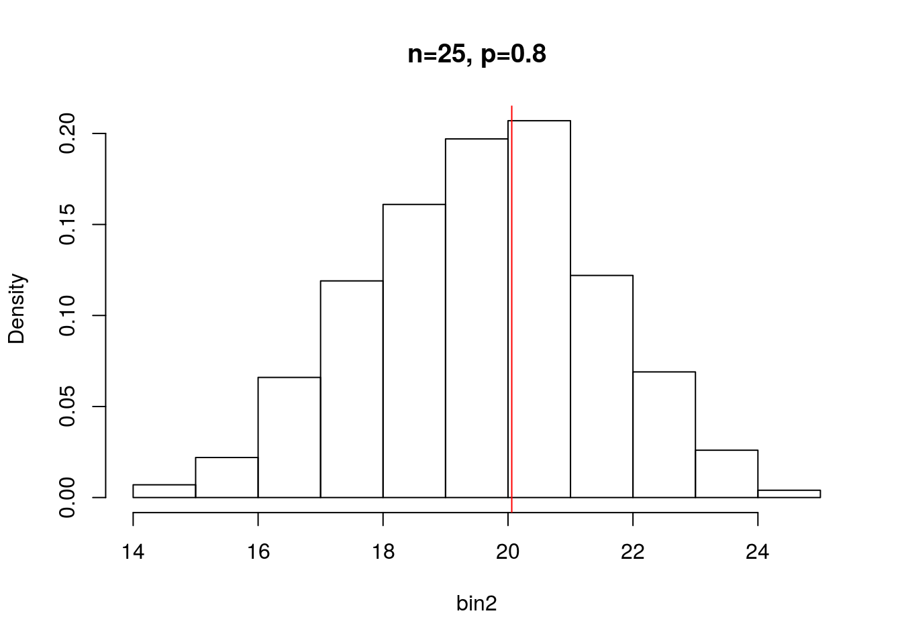
par(mfrow=c(1,1))Note que quando \(p=0,8\) a distribuição não é simétrica como é quando \(p=0,5\). A média de sucessos agora é maior e o desvio também é maior.
Calcule o desvio padrão das duas distribuições usando a fórmula \(np\) e compare com o valor calculado com a função sd.
2.2.1 Distribuição binomial na natureza
É muito comum termos uma variável binomial em dados biológicos: presença ou ausência de uma espécie em um dado local, proporção de plantas mortas em um tratamento experimental, proporção de organismos infestados por parasitas, entre outros.
Vamos tomar como exemplo um peixe da família Characidae Thayeria tapajonica da bacia do Tapajós. A espécie foi descrita recentemente (2017) e se observou uma grande quantidade de peixes infestados por parasitas (ainda desconhecido). Em 50 amostras ao longo do rio Tapajós foram coletados 100 indivíduos de T. tapajonica e contaram quantos destes estavam infestados por parasitas. Os dados estão no arquivo ‘peixes.csv’. Vamos carregá-lo no R e inspecionar a distribuição.
peixes <- read.csv("dados/peixes.csv")
summary(peixes$infestados)## Min. 1st Qu. Median Mean 3rd Qu. Max.
## 59.0 66.0 70.0 69.2 71.0 80.0Vamos fazer um histograma com essa a coluna ‘infestados’.
hist(peixes$infestados, probability = TRUE, main="média=69")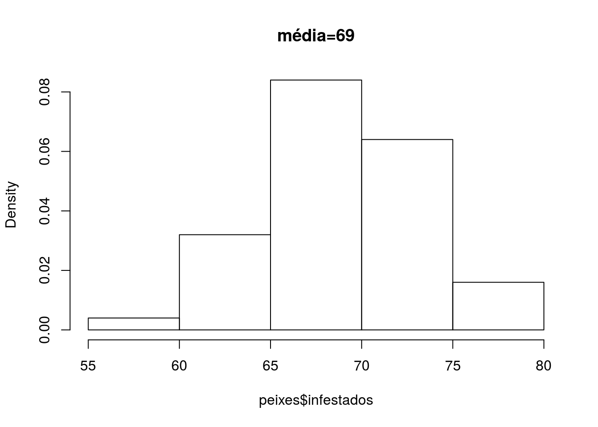
Vamos checar o ajuste dos dados à distribuição binomial. Antes, vamos calcular a média e o desvio padrão dos dados e, com isso, os parâmetros \(n\) e \(p\).
# media
med.peixes <- mean(peixes$infestados)
# desvio padrao
desv.peixes <- sd(peixes$infestados)
# N de tentativas
n = 100
# probabilidade de sucesso
## se média = n*p; p=média/100
prob.obs <- med.peixes/100Agora para a comparação visual, vamos comparar os dados com a distribuição binomial com \(n\) e \(p\) igual aos dados.
# antes precisamos de um vetor que represente o intervalo de observações
seq.peixes <- seq(54, 80, 2)
hist(peixes$infestados, probability=TRUE, breaks=seq.peixes)
points(seq.peixes, dbinom(seq.peixes, size = n, prob=prob.obs), col="blue")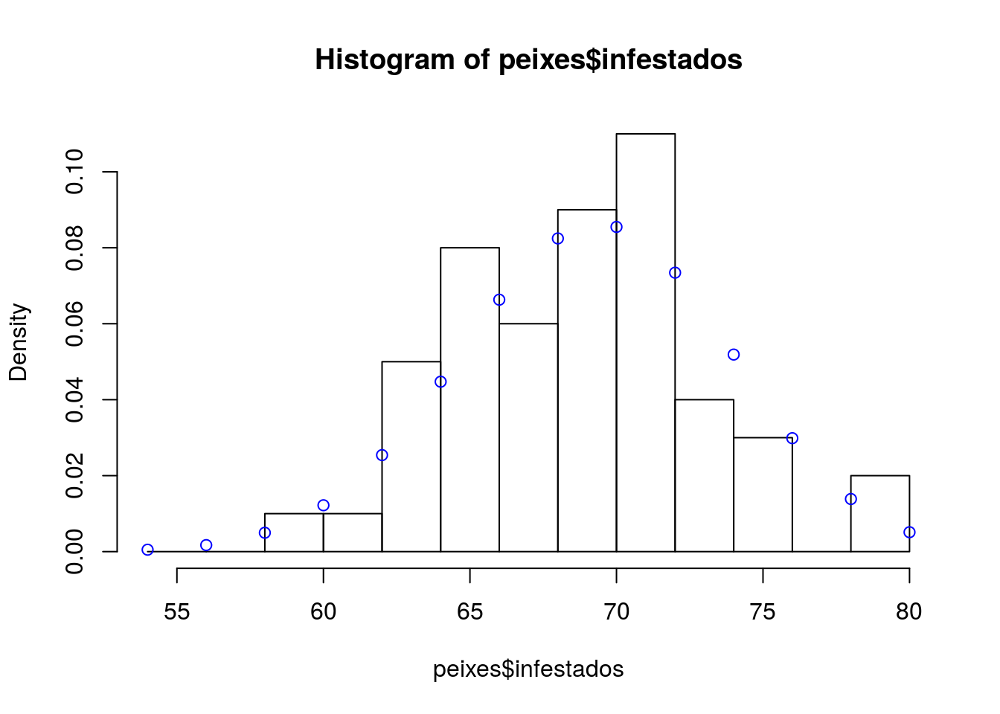
2.3. Distribuição Poisson
A distribuição Poisson é uma distribuição discreta utilizada para descrever eventos raros que acontecem com uma mesma taxa. A distribuição poisson possui apenas um parâmetro para descrevê-la, \(/lamba\). Uma variâvel poisson é descrita como:
onde \(\lambda\) representa a média e a variância da distribuição.
2.3.1. Distribuição Poisson na natureza
A distribuição poisson é utilizada para descrever número de espécies em determinado local, frequência de espécies raras no espaço ou no tempo, número de nascimentos em um município, entre outros.
Vamos tomar como exemplo a produção de frutos em cada planta de uma variedade de tomate, Lycopersicon esculentum (Solanaceae). Em uma estufa, pesquisadores acompanharam o crescimento de 1000 plantas de tomate até a formação dos frutos. Em cada planta, os pesquisadores contaram o número de frutos produzidos. Vamos olhar a distribuição dos dados. Os dados estão no arquivo ‘tomates.csv’. Vamos carregar o arquivo e olhar as estatísticas descritivas.
tomates <- read.csv("dados/tomates.csv")
summary(tomates)## Nfrutos
## Min. : 51.00
## 1st Qu.: 74.00
## Median : 80.00
## Mean : 80.03
## 3rd Qu.: 86.00
## Max. :110.00Vamos olhar graficamente em um histograma de densidade probabilística a distribuição dos dados e a média do número de frutos.
hist(tomates$Nfrutos, probability=TRUE, main="média=80")
abline(v=mean(tomates$Nfrutos), col="red")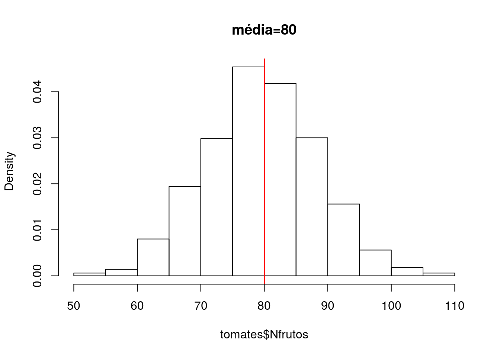
Vamos comparar a distribuição observada com o esperado de uma poisson com \(\lambda\) igual a média dos dados observados.
# vamos calcular o máximo do número de frutos
mfrut<-max(tomates$Nfrutos)
# vamos calcular a média do número de frutos
lambda = mean(tomates$Nfrutos)
hist(tomates$Nfrutos, probability = TRUE)
points(dpois(0:mfrut, lambda), col="blue")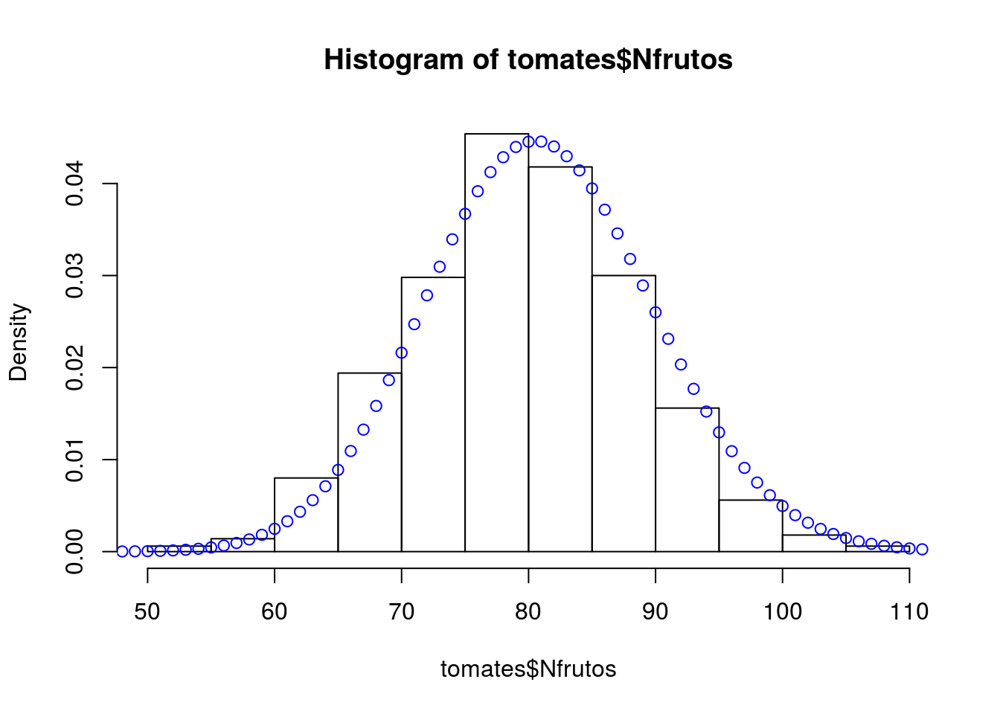
Vamos calcular agora a variância da distribuição empírica e ver se ela se aproxima do valor de \(\lambda\).
# variância
var(tomates$Nfrutos)## [1] 78.21248mean(tomates$Nfrutos)## [1] 80.027Sumário das distribuições
| Distribuição | \(E(X)\) | \(\sigma^2(X)\) | Uso | Exemplo |
|---|---|---|---|---|
| Normal | \(\mu\) | \(\sigma^2\) | Curva simétrica para dados contínuos | Distribuição de tamanho |
| Binomial | \(np\) | \(np(1-p)\) | Número de sucessos em \(n\) tentativas | Presença ou ausência de espécies |
| Poisson | \(\lambda\) | \(\lambda\) | Eventos raros independentes onde \(\lambda\) é a taxa que o evento ocorre no espaço ou no tempo | Distribuição de espécies raras no espaço |